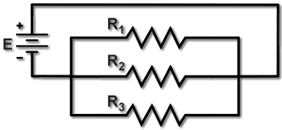
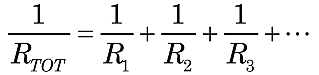
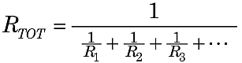
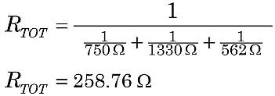

Total Resistance for Resistors in Parallel
|
 Figure 1.Three resistors in parallel. |
For resistors wired in parallel, the voltage dropped across each resistor will be the same, while the currents through each will be inversely proportional to each resistance. This application of Ohm's Law leads to a formula for the total of parallel resistances:

Solving for RTOT we get:

For example, suppose the circuit in Figure 1 above has R1 = 750 Ω, R2 = 1.33 kΩ, and R3 = 562 Ω. Then the total parallel resistance for this circuit is

or RTOT = 259 Ω (rounded). You will notice that the total parallel resistance is always smaller than the smallest resistance in the parallel circuit.
Note: It is important to convert to consistent units, if necessary. Above, we converted 1.33 kΩ to 1330 Ω so that our arithmetic consistently used ohms, not a mixture of ohms and kilohms.
Here is one way to do the above calculation with a scientific calculator:
Read the result "258.760" in the display.